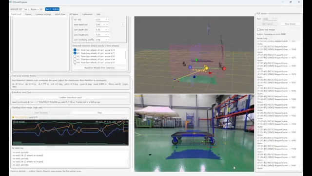
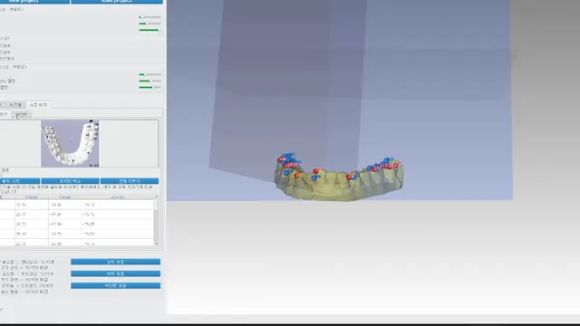
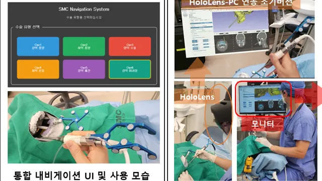
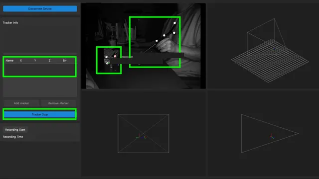
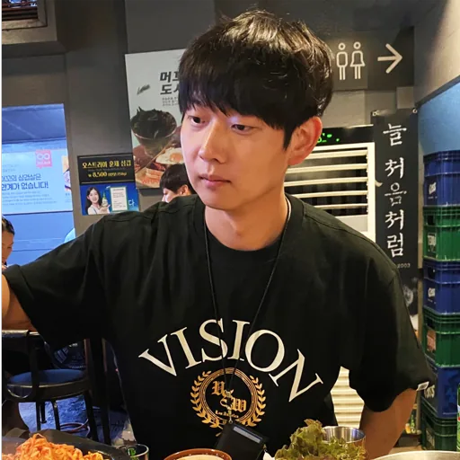

김진민 Jinmin Kim
수술 로보틱스·컴퓨터비전 R&D 엔지니어
Surgical Navigation · 3D Registration · Optical Tracking · Computer Vision · XR · Robotics Integration
3D 공간에서 해부학 구조, 수술 도구, 센서, 카메라, XR 기기, 로봇을 하나의 좌표계로 연결해 온 엔지니어입니다.

1 영상·센서
CT·구강 스캔·ToF·LiDAR 입력

2 모델·특징점
치아·악안면 특징점, 대차·바퀴 분할

3 정합
영상-환자·STL 기준·ICP 정합

4 추적
광학 마커 6DoF, 호흡 파형
5 계획·내비·시각화
수술 계획·내비게이션·XR 표시
도구 레이어 AI Build Lab
㈜디지트랙 연구원 · 소프트웨어 R&D
DGIST 로봇및기계전자공학 석사
삼성서울병원 구강악안면외과와 3년 넘게 공동 R&D를 하며 영상-환자 정합, 수술 도구 추적, 디지털 교합 워크플로우를 개발하고 있습니다.
Email · GitHub · LinkedIn · CV (PDF)
연구 방향 — 추적·정합·내비게이션 경험을 바탕으로 넓혀 가려는 분야: 수술 로보틱스 · Physical AI · Surgical AI · 3D 비전 · 로봇 인지 · 멀티모달 인지 · 공간 지능
기술 영역
- 수술 내비게이션·광학 추적
- 3D Slicer, VTK, Qt, OpenIGTLink, Optical tracking, Tool calibration
- 3D 정합·컴퓨터비전
- PCA, ICP, CLPSO, Open3D, OpenCV, SciPy
- XR·공간 컴퓨팅
- Unity, OpenXR, MRTK, HoloLens 2, Meta Quest, Galaxy XR, Photon PUN2
- 로봇 비전·센서 통합
- ToF-RGB calibration, SAM3 segmentation, SICK TiM LiDAR, Zenoh, Behaviour-tree actions
- AI 활용 제품 엔지니어링
- Requirements & architecture, Acceptance criteria, Automated tests, Release operations, Human review
대표 연구
구강악안면 디지털 교합 워크플로우
분리된 특징점·교합·평가 기능을 한 앱의 end-to-end 워크플로로 재설계
하악골 골절 정복 최적화
모호한 임상 문제를 검증 가능한 3D 정합과 최적화 문제로 바꿉니다.
구강악안면 수술 내비게이션 (SMCNavi → OprNavi → OmfsNavi)
정합·추적·캘리브레이션을 3D Slicer에 통합, OprNavi·OmfsNavi로 재구성
주요 논문·학회 발표
- 2026 Development and Clinical Evaluation of an Extended Reality-Based Consultation Platform "OMFS VR Consultation App" for Enhanced Patient Understanding in Orthognathic Surgery
2026 의료메타버스학회 춘계 학술대회 · 포스터 발표 · 공동저자 · 관련 프로젝트
- 2024 A Proof of Concept: Optimized Jawbone-Reduction Model for Mandibular Fracture Surgery
Journal of Imaging Informatics in Medicine (SCIE, Q1) · 학술지 논문 · 공동 제1저자 (Joint first author) · 관련 프로젝트
- 2022 Dental Occlusion Model Using Arch Line for Mandibular Fracture Surgery
ACCAS 2022 · 국제학회 논문 · 제1저자 · 관련 프로젝트
특허 출원 7건 중 등록 3건 · 수상 9건 · 전체 목록과 상태
소식
view-anything의 첫 릴리스 v0.1.0을 공개했습니다. 탐색기에서 더블클릭으로 바로 여는 가벼운 Markdown 뷰어로 시작했습니다.
NeuroPilot의 표적 비교·RMSE·CSV 평가 기능을 구현하고, 샘플 검토에서 확인한 기준 데이터 문제에 대해 정의 명확화와 재측정을 요청했습니다.
방사선치료용 3차원 표면유도 호흡추적 연구(1차년도 센서·알고리즘 검증)를 시작했습니다.
연락

공동연구와 연구 대화를 환영합니다. uiop3847@naver.com · 연락처 안내